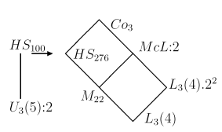

gap> x:=Indeterminate(GF(2)); x gap> SetName(x,"x"); gap> f:=x^23-1; x^23+Z(2)^0 gap> Factors(f); [ x+Z(2)^0, x^11+x^9+x^7+x^6+x^5+x+Z(2)^0, x^11+x^10+x^6+x^5+x^4+x^2+Z(2)^0 ] gap> f:=First(Factors(f),i->Degree(i)>1); x^11+x^9+x^7+x^6+x^5+x+Z(2)^0We next define a code from this polynomial invoking the GAP package GUAVA.
gap> LoadPackage("guava");
true
gap> cod:=GeneratorPolCode(f,23,GF(2));
a cyclic [23,12,1..7]3 code defined by generator polynomial over GF(2)
This is in fact the binary Golay code. In passing we just determine some
property. We extend it by a parity bit. The weight distribution of the
extended code gives the numbers of subsets of the corresponding Steiner
system.
gap> IsPerfectCode(cod); true gap> ext:=ExtendedCode(cod); a linear [24,12,8]4 extended code gap> WeightDistribution(ext); [ 1, 0, 0, 0, 0, 0, 0, 0, 759, 0, 0, 0, 2576, 0, 0, 0, 759, 0, 0, 0, 0, 0, 0, 0, 1 ]The automorphism group of this code is the Mathieu group M24. We also determine its order and degree of transitivity.
gap> autext:=AutomorphismGroup(ext); <permutation group of size 244823040 with 11 generators> gap> gens:=SmallGeneratingSet(autext);; gap> m24:=Group(gens); Group([ (1,7,11,12,16,15,8,6,14,24,23,18,20,9,5,17,22,2,13,4,21)(3,19,10), (1,12,20,18,14,10,11)(2,3,24,9,6,21,16,23,7,22,5,15,4,17)(13,19) ]) gap> SetName(m24,"m24"); gap> Size(m24); 244823040 gap> Transitivity(m24,[1..24]); 5Next we obtain M22.2 as the stabilizer of a duad (a set of size 2) in M24. As M24 acts quintuply transitive, it is unimportant which points we select. The action of M22.2 on the remaining points is faithful. In the program we will denote the group in this action by m22a.
gap> st:=Stabilizer(m24,[23,24],OnSets); <permutation group of size 887040 with 9 generators> gap> gens:=SmallGeneratingSet(st);; gap> st2:=Group(gens); Group([ (1,3,17)(2,7,4,9,20,10)(5,22)(6,19,14,8,13,16)(11,12,21)(23,24), (1,5,8,15,16,17)(2,13,21)(3,19)(4,7)(6,10,11)(9,22,14,20,18,12) ]) gap> m22a:=Action(st2,[1..22]); Group([ (1,3,17)(2,7,4,9,20,10)(5,22)(6,19,14,8,13,16)(11,12,21), (1,5,8,15,16,17)(2,13,21)(3,19)(4,7)(6,10,11)(9,22,14,20,18,12) ]) gap> SetName(m22a,"m22a"); gap> Size(m22a); 887040Our next step will be to construct the Higman-Sims graph. The ATLAS tells us on page 80 that this is a rank 3 graph of valence 22 on 100 points, the point stabilizer in the automorphism group being M22.2. This Group then acts on 22+77 points. For our construction, we therefore need the action of M22.2 on 77 points. We will get it by acting on cosets of a suitable subgroup. To get this we need some information from the classification of maximal subgroups of M22 given on page 39 of the ATLAS:
Order Index Structure G.2 Abstract Mathieu 5760 77 2^4:A_6 2^4:S_6 N(2A^4) hexadThis tells us:
gap> s:=SylowSubgroup(m22a,2);; gap> pciso:=IsomorphismPcGroup(s); Pcgs([ (1,20)(3,14)(6,10)(7,18)(9,19)(12,15)(16,17), (1,20)(3,6)(4,13)(5,21)(9,17)(10,14)(16,19), (3,6)(4,9)(5,16)(8,11)(12,18)(13,17)(19,21), (4,19)(5,17)(7,15)(8,11)(9,21)(10,14)(13,16), (2,13)(3,16)(4,8)(5,11)(6,9)(10,19)(14,17)(21,22), (2,14)(3,8)(4,16)(5,9)(6,11)(10,22)(13,17)(19,21), (2,3)(4,17)(5,19)(6,22)(8,14)(9,21)(10,11)(13,16), (2,22)(3,6)(4,5)(8,11)(9,16)(10,14)(13,21)(17,19) ]) -> [ f1, f2, f3, f4, f5, f6, f7, f8 ]We compute all elementary abelian normal subgroups of size 16 in this group.
gap> a:=Image(pciso); Group([ f1, f2, f3, f4, f5, f6, f7, f8 ]) gap> n:=Filtered(NormalSubgroups(a),i->Size(i)=16 > and IsElementaryAbelian(i)); [ Group([ f2, f3*f4, f6*f7, f8 ]), Group([ f1*f2, f3*f4, f6*f7, f8 ]), Group([ f1, f3*f4, f6*f7, f8 ]), Group([ f5, f6*f7, f7, f8 ]), Group([ f2*f3*f4, f6*f7, f7, f8 ]) ]We get the preimages of these subgroups in the permutation group.
gap> n:=List(n,i->PreImage(pciso,i));;We now could just look at the sizes of the normalizers to pick the right group. We happen to know, however, that the elementary abelian group we are looking for is regular. (The remaining 6 points form the hexad stabilized by the normalizer.) We use this knowledge to pick the right group and we compute its normalizer.
gap> e:=Filtered(n,i->IsRegular(i,MovedPoints(i)));;Length(e); 1 gap> e:=e[1];; gap> h:=Normalizer(m22a,e);;The action of m22a on 77 points can now be created via the action homomorphism. The group acting on 77 points is simply the image.
gap> ophom:=ActionHomomorphism(m22a,RightCosets(m22a,h),OnRight);; gap> mop:=Image(ophom); <permutation group with 2 generators> gap> DegreeAction(mop); 77To get the simultaneous action on 22 and 77 points, we form the direct product of the group on 22 and on 77 points and take the diagonal subgroup. We get it from both embeddings into the direct product by multiplying the images of the generators under both embeddings.
gap> dp:=DirectProduct(m22a,mop);; gap> emb1:=Embedding(dp,1);; gap> emb2:=Embedding(dp,2);; gap> diag:=List(GeneratorsOfGroup(m22a), > i->Image(emb1,i)*Image(emb2,Image(ophom,i)));; gap> diag:=Group(diag,());; gap> SetName(diag,"M22.2-99");It is now time to construct the Higman-Sims graph. For this we use the package GRAPE.
gap> LoadPackage("grape");
true
GRAPE permits us to construct the graph by adjoining one edge after another.
As we already know, that M22.2 in the diagonal action is a subgroup of the
automorphism group, we can tell this to GRAPE and need to adjoin only one
edge from every orbit of this group.
gap> gamma:=NullGraph(diag,100);
rec( isGraph := true, order := 100, group := M22.2-99,
schreierVector := [ -1, 2, 1, 1, 2, 1, 1, 2, 2, 1, 1, 2, 1, 1, 2, 1, 1, 2,
2, 2, 2, 1, -2, 2, 2, 1, 2, 1, 1, 1, 1, 1, 2, 1, 2, 2, 1, 1, 1, 1, 1,
2, 2, 1, 1, 1, 1, 2, 1, 2, 1, 2, 2, 1, 1, 2, 2, 2, 1, 2, 1, 2, 1, 1, 1,
2, 1, 1, 2, 1, 1, 2, 1, 2, 1, 2, 1, 1, 1, 2, 2, 2, 2, 1, 2, 2, 1, 2, 1,
1, 2, 2, 2, 1, 2, 1, 2, 1, 1, -3 ], adjacencies := [ [ ], [ ], [ ] ],
representatives := [ 1, 23, 100 ], isSimple := true )
Graphs in GRAPE are digraphs, so we have to add each edge in both directions.
The first edge is to connect the 22 points with point 100 to make up for
valence 22:
gap> AddEdgeOrbit(gamma,[1,100]); AddEdgeOrbit(gamma,[100,1]);The ATLAS further tells us:
gap> hexad:=First(Orbits(h,[1..22]),i->Length(i)=6); [ 1, 7, 18, 20, 12, 15 ] gap> for i in hexad do > AddEdgeOrbit(gamma,[i,23]); > AddEdgeOrbit(gamma,[23,i]); > od;Looking at the neighbourhood of 23 we see that we have not yet reached valence 22.
gap> Adjacency(gamma,23); [ 1, 7, 12, 15, 18, 20 ]Indeed, we still have to consider the next rule, to determine which vertices in the second orbit are joined to vertex 23:
gap> stab:=Stabilizer(diag,23);; gap> orbs:=Orbits(stab,[24..99]);; gap> orbreps:=List(orbs,i->i[1]); [ 24, 45 ]We form the intersections of our original hexad with the hexads obtained from the orbit representatives.
gap> rep1:=orbreps[1]; 24 gap> Adjacency(gamma,rep1); [ 1, 8, 9, 10, 13, 18 ] gap> Intersection(hexad,Adjacency(gamma,rep1)); [ 1, 18 ] gap> rep2:=orbreps[2]; 45 gap> Adjacency(gamma,rep2); [ 2, 6, 10, 11, 13, 21 ] gap> Intersection(hexad,Adjacency(gamma,rep2)); [ ]Only in one case the hexads intersect trivially. We add the respective edges.
gap> AddEdgeOrbit(gamma,[23,rep2]); AddEdgeOrbit(gamma,[rep2,23]);Now the graph is completed. We check that it is indeed a simple graph, look at the adjecency of 23 and find out it is distance regular.
gap> IsSimpleGraph(gamma); true gap> Adjacency(gamma,23); [ 1, 7, 12, 15, 18, 20, 45, 47, 51, 54, 57, 59, 63, 64, 66, 70, 75, 76, 79, 82, 85, 87 ] gap> IsDistanceRegular(gamma); trueFinally, we compute the automorphism group of the graph. This is done by calling Brendan McKays 'nauty' program, though we don't see anything from this.
gap> aug:=AutGroupGraph(gamma); <permutation group with 11 generators> gap> Size(aug); 88704000Indeed the size is correct for HS.2, but we would like to work with a smalleer generating set.
gap> small := SmallGeneratingSet(aug);; gap> Length(small); 2 gap> aug2 := Group(small); <permutation group with 2 generators>Finally we verify the result by looking at the composition series.
gap> DisplayCompositionSeries(aug2); G (2 gens, size 88704000) | Z(2) S (2 gens, size 44352000) | HS 1 (0 gens, size 1)We get HS as the derived subgroup and continue to work with it.
gap> hs:=DerivedSubgroup(aug2); <permutation group of size 44352000 with 2 generators>Finally we want to construct Co3. The ATLAS tells us (page 134) that Co3 has a permutation representation on 276 points in which the point stabilizer is isomorphic to McL:2. Furthermore there is a maximal subgroup of Co3 isomorphic to HS. So our first step will be to construct HS as a permutation group acting on 276 points.
gap> LoadPackage("ctbllib");
true
gap> ct:=CharacterTable("U3(5)");ct2:=CharacterTable("U3(5).2");
CharacterTable( "U3(5)" )
CharacterTable( "U3(5).2" )
gap> cths:=CharacterTable("hs");
CharacterTable( "HS" )
gap> OrdersClassRepresentatives(ct);
[ 1, 2, 3, 4, 5, 5, 5, 5, 6, 7, 7, 8, 8, 10 ]
gap> OrdersClassRepresentatives(ct2);
[ 1, 2, 3, 4, 5, 5, 5, 6, 7, 8, 10, 2, 4, 6, 8, 10, 12, 20, 20 ]
gap> ordhs:= OrdersClassRepresentatives(cths);
[ 1, 2, 2, 3, 4, 4, 4, 5, 5, 5, 6, 6, 7, 8, 8, 8, 10, 10, 11, 11, 12, 15, 20,
20 ]
We see that U3(5) contains elements of order 12 while U3(5) does not.
Furthermore HS contains only one class of elements of order 12. Thus
working with an element of order 12 will ensure that we find a subgroup U
and not its derived subgroup U'. We show that the class of elements of
order 12 is selfcentralizing in HS, hence there is a chance of 1/12 that
a random element in HS has order 12 and we know that there is a conjugate
of U3(5):2 in HS that contains this element.
gap> pos:= Position(ordhs,12); 21 gap> SizesCentralizers(cths)[pos]; 12We now start the random search, the element found is called e1, its 6th power is called e2.
gap> repeat e1:=Random(hs);until OrderPerm(e1)=12; gap> e2:=e1^6;;There is just one class of elements of order 2 in U3(5):2, which is class number 2. We look up its size.
gap> SizesConjugacyClasses(ct2)[2]; 525As we saw, the number of the class of elements of order 12 in HS is 21. We form the 6th powermap which we must do in two steps, first second powermap, and then third, since the character table stores only powermaps for primes.
gap> PowerMap(cths,3)[PowerMap(cths,2)[21]]; 2So we now know that the 6th power of our element of order 12 lies in class number 2 (there are two classes of elements of order 2 in HS, so we had to find the right one). We can now determine the size of this class.
gap> SizesConjugacyClasses(cths)[2]; 5775From comparison with the size of the class of elements of order 2 in U3(5):2 we see that we have a chance of about 1/11 that a random conjugate of e2 will lie in U3(5):2. A similar count for the maximal subgroups of U3(5):2 (which we leave to the reader) would establish that about every second conjugate of e2 in U3(5):2 together with e1 will indeed generate U3(5):2. So we start our search:
gap> count:=0;; gap> repeat > u:=Subgroup(hs,[e1,e2^Random(hs)]); > count:=count+1; > until Index(hs,u)=176; gap> count; 13We have indeed been lucky to find a generating pair in 13 tries. We now construct the action of HS on the cosets of the subgroup u. (We use the action on special coset representatives to save memory and time.)
gap> ophom:=ActionHomomorphism(hs,RightTransversal(hs,u),OnRight);; gap> hsop:=Image(ophom); <permutation group with 2 generators> gap> IsPrimitive(hsop,[1..176]); trueWe now obtain the action of HS on 100+176 points in analogy to the procedure for M22.2.
gap> dp:=DirectProduct(hs,hsop);; gap> emb1:=Embedding(dp,1);; gap> emb2:=Embedding(dp,2);; gap> diag:=List(GeneratorsOfGroup(hs), > i->Image(emb1,i)*Image(emb2,Image(ophom,i)));; gap> diag:=Group(diag,());;SetName(diag,"hs-276"); gap> Size(diag); 44352000Our last task will now be to find an element of Co3 not contained in HS. Such elements will be contained in McL.2, but at this point we do not have McL.2 in the appropriate action. There are conjugates, however, such that the intersection of HS and McL:2 is isomorphic to M22 (see figure). (McL:2 is a point stabilizer in the action of Co3 on 276 points and M22 is a point stabilizer in the orbit of length 100 of HS.)

gap> adj:=Adjacency(gamma,5); [ 29, 31, 34, 35, 40, 44, 47, 55, 59, 61, 65, 70, 73, 75, 80, 81, 82, 83, 84, 85, 86, 100 ] gap> t:=Stabilizer(diag,[5,adj[5]],OnSets);;Because we computed T as stabilizer it might have many generators. For the computation of its automorphism group, however, we want to have it on fewer generators.
gap> sg := SmallGeneratingSet(t);; gap> t := Subgroup(diag, sg); <permutation group with 2 generators> gap> DisplayCompositionSeries(t); G (2 gens, size 40320) | Z(2) S (15 gens, size 20160) | A(2,4) = L(3,4) 1 (0 gens, size 1)We now find the automorphism group of T, and search for outer automorphisms.
gap> aus:=AutomorphismGroup(t);; gap> Size(aus); 241920 gap> inner:=InnerAutomorphismsAutomorphismGroup(aus); <group with 2 generators> gap> Index(aus,inner); 6 gap> rt:=RightTransversal(aus,inner);; gap> automs:=Filtered(rt,i->i^2 in inner and not i in inner);; gap> Length(automs); 3 gap> List(automs,Order); [ 2, 2, 2 ]We now use a test whether an automorphism of a permutation group can be realized by conjugation in the symmetric group
S_n.
Finding that one of them is indeed induced by conjugation with a
permutation, we adjoin this permutation to obtain a generating set of Co3.
gap> List(automs,IsConjugatorAutomorphism); [ false, true, false ] gap> i := Position( List(automs,IsConjugatorAutomorphism), true );; gap> element:=ConjugatorInnerAutomorphism(automs[i]);; gap> if SignPerm( element ) = -1 then > ot:=Filtered( Orbits(t,[1..276]), orb -> Length(orb)=2)[1]; > element:=element*(ot[1],ot[2]); > fi; gap> co3:=Group(Concatenation(GeneratorsOfGroup(diag),[element]),()); <permutation group with 3 generators>Finally we just verify that indeed we have obtained Co3.
gap> Size(co3); 495766656000 gap> DisplayCompositionSeries(co3); G (3 gens, size 495766656000) | Co(3) 1 (0 gens, size 1)